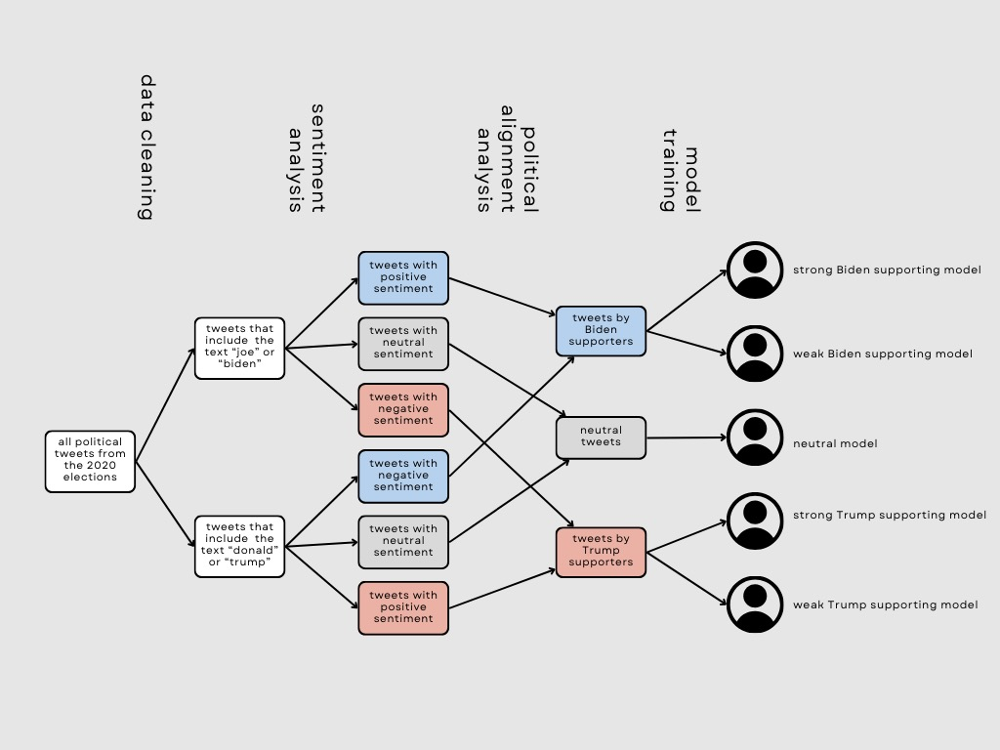
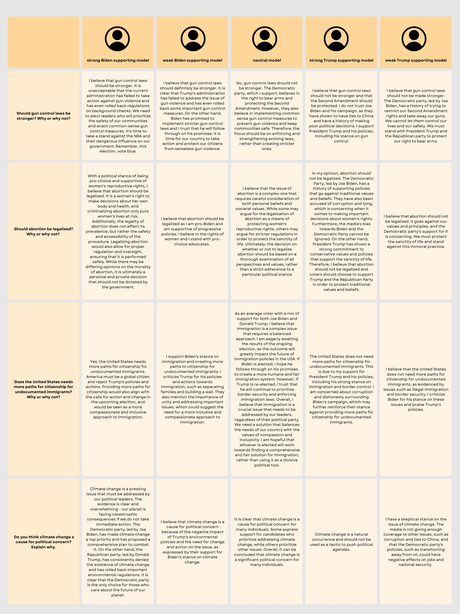

Project Description
The main goal of politicians is to cater to their constituents and understand the changes they want to see.
To do so, they need to be able to accurately identify their target voters, contact and survey them, understand
their values and ideals, and predict which policies would best represent such populations. However, this process can
often be time-consuming and expensive. Our project aims to help this problem.
Twitter data contains a wealth of information that contains public
opinions on policies and politicians. By analyzing tweets from different political groups,
we aim to create personas that mimic key voter groups using LangChain Agents and OpenAI’s GPT-3.5 Turbo API.
Our goal is to develop a model that can generate new data to predict real voting patterns based on previously posted tweets.
We will then be able to ask these personas different political questions and explore their response and reasoning.
Objectives
Locate a Political Candidate’s Target Audience: Because our model can predict public opinion on political issues,
candidates can figure out which voters align best with their policies in order to accurately target their campaign’s
marketing efforts, which will help voters feel better represented by their leaders.
Forecast Success of Political Candidates: Policies: Candidates can ask our model to predict whether the exact policies
they want to implement will gain favor or discontent from the public. They can use these responses to tailor their
policies that will represent and benefit as many voters as possible.
Address Limitations of Surveys and Cold Calling: Surveys and cold calling are very time-consuming and expensive.
These traditional methods also have a low success rate as the average person may not take time out of their day to complete them.
Our project addresses this problem.
Methods
Part 1: NLP Approach - Sentiment Analysis
- Calculated the average sentiment of each user’s tweets and classified each user into Biden-supporting voter,
Trump-supporting voter, or neutral voter
- Split the Biden-supporting users into Biden Strong and Biden Weak based on a sentiment threshold, repeated for Trump-supporting users
Part 2: LLM Approach - Model Development
-
Used LangChain as our model integration framework and OpenAI’s GPT-3.5 Turbo-Instruct API to create an LLM-powered generative model
that can use trained clusters to produce the political affiliation, policy related opinions, opinion polarity, and emotional
tone relating to common political discourses of 5 select voter populations
-
Created 5 models, named Biden_strong, Biden_weak, Neutral, Trump_strong, Trump_weak
-
Model Training
-
Semantic training: analyzes the training tweets’ semantic language style and word choice to extract the tone and emotion of select voter type
-
Contextual training: uses author’s tone description and analyzes the context and meaning of training tweets to extract the political stance, candidate affiliation, and general opinion of voter type
-
Asked the five models 9 questions about relevant political topics (e.g. gun control, abortion legalization, climate change, etc.) and recorded results to gain understanding of sample political
opinions
Flowchart of Methods

Results
NLP Findings
-
1,260 users: 645 support Biden (51%), 461 support Trump (37%), 154 are neutral (12%)
-
The sentiment score results are strongly negative, meaning it is more common
for users to express support for a certain candidate by expressing negative views about the competing candidate, as opposed to positive views about their own
LLM Findings
-
Outputs for models were very emotionally charged, polarizing, and made use of strongly opinionated language
-
Even neutral model expressed its moderate views with strong conviction
-
Result aligns with our initial expectations, as Twitter contains the most intense opinions, and this
is reflected by our model
Sample Responses

Limitations
-
Open AI API limits how many tweets we can sample due to exceeding the number of tokens available
-
Datasets have limited data and it’s very skewed towards tweets with negative sentiments (not enough tweets with positive sentiments)
-
Datasets are only available for Trump and Biden, thus limiting our insight about other parties such as the Independent party, Green party, etc.
-
Only data from 2020’s tweets are used, so the current political climate is not accurately reflected
Next Steps
-
Be able to feed our models the latest Twitter data to get a more accurate picture of the current political climate
-
Find a way to sample more Tweets than we can with the limitation of our current model
-
Have our model output more streamlined answers through prompt engineering so that further analysis can be performed on the model responses